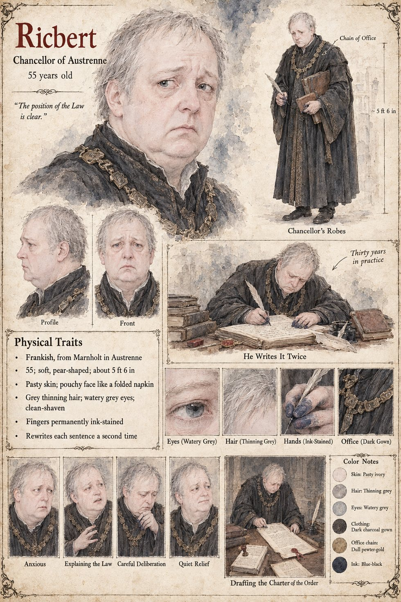

Ricbert
Chancellor of Austrenne · counsel to King Theudebald and Queen Adalgund · 55 years old by his sheet
A pouchy, anxious lawyer with a face like a folded napkin, thirty years in practice, who has been trying for a year to learn what no officer of the Crown had thought to count. Sigebert Marl sells him the tally of eighty-nine swords on the eighth of Mavren for forty marks, and a four-page Digest of the Eleventh Clause for a mark. He copies the King's writ three times through the Chancellor's clerks, who alter the second paragraph and are made to alter it back, and attends King Theudebald's audience with the smith, which he records only as an audience of a technical character. After the King's death he sits for three hours with the Countess and explains the position of the Law: that a succession in dispute goes to the altar, that a party who declines the altar concedes the writ, and that the Law, written for a kingdom in which iron could be relied upon to disagree with itself, contains no provision he can find for the case in which it does not. She says that she will swear her case on a sword at the Ordeal before the Hierarch and let the Law decide it, which in thirty years he has never once heard a client say, and he writes the sentence down and then, because he is a careful man, writes it down a second time.
He arranges the seating at the Ordeal himself, three times, and finds at the third attempt that it is not possible to seat the Duke of Tarnwald anywhere with a door within a hundred paces of it, and concludes, with the air of a man submitting to an act of God, that the west doors of the cathedral will stand open. He drafts the Charter of the Order of the Hundred and Forty-Four in nine days and has it copied three times; he leaves a space, with a lawyer's tact, to be filled by custom. When the Queen calls the last two blades for one man he tells her, with great gentleness, that the Charter provides for a hundred and forty-four knights, one sword to each, and that he has not been able to devise a form of words by which one knight might be two. Then count him twice, Chancellor, she says, and he answers that it is not a law, and it is the last honest objection he will raise to anything for the remainder of the reign.
The manuscript gives his lawyer's habits, his napkin face and his ink; the sheet's age of fifty-five, soft pear-shaped build of about 5 ft 6 in, pasty skin, thinning grey hair, watery grey eyes, clean-shaven face, ink-stained fingers and dull pewter-gold chain of office are its own. Its pull-quote The position of the Law is clear and its captions He Writes It Twice and Drafting the Charter of the Order are its own; its expression panels run Anxious, Explaining the Law, Careful Deliberation and Quiet Relief.
“an audience of a technical character”
Appears In

Related Subjects


Related Records

In the bedchamber of the dying King Theudebald lies on four pillows with a sword on the coverlet between his hands and his daughter Adalgund's, the window open on the river; the door has been taken off its hinges by a carpenter and stands in the corridor, and in the empty frame the Duke, Waldo, sits on a stool looking at his brother while the Chancellor Ricbert and the Hierarch Rothari wait at the corridor's end.